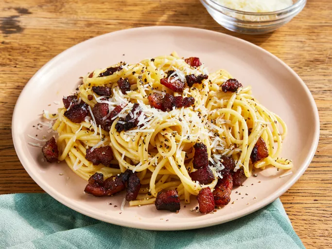

Spaghetti alla Carbonara

Carbonara is a pasta dish made with eggs, hard cheese, fatty cured pork, and black pepper. The dish took its modern form and name in the middle of the 20th century. The cheese is usually pecorino romano. Some variations use Parmesan, Grana Padano, or a combination of cheeses.
- 1/2 pound thick cut bacon
- 4 ounces Parmesan or Pecorino Romano cheese
- 3 large eggs
- 1 egg yolk
- Ground black pepper
- 2 cloves garlic
- 1/3 cup starchy pasta water
- 16 ounces of bronze dye cut pasta noodles
Steps
- Combine your eggs and egg yolk in a bowl.
- Next, add 4 ounces of grated cheese. Stir with a fork to combine. Season with fresh black pepper.
- Slice 1/2 pound of thick cut bacon into large chunks
- Add the sliced bacon to a cold nonstick pan and then turn the heat to medium
- Once the bacon is fully cooked and the fat has rendered out, strain out the grease, keeping only 2 tablespoons of fat in the pan.
- Return the pan to medium low heat and add minced garlic. Saute for one minute and then turn off the heat.
- Add bucatini noodles to a pot of heavily salted water and cook to desired done-ness.
- Add the cooked noodles to the pan with the bacon along with 1/3 cup of pasta water.
- Add the egg and cheese mixture to the pan. Toss rigorously and keep it moving.
- Taste for seasoning and assess for thickening. If it needs to be thicker, add more cheese (1 ounce at a time) and mix rigorously.
- Serve and enjoy!